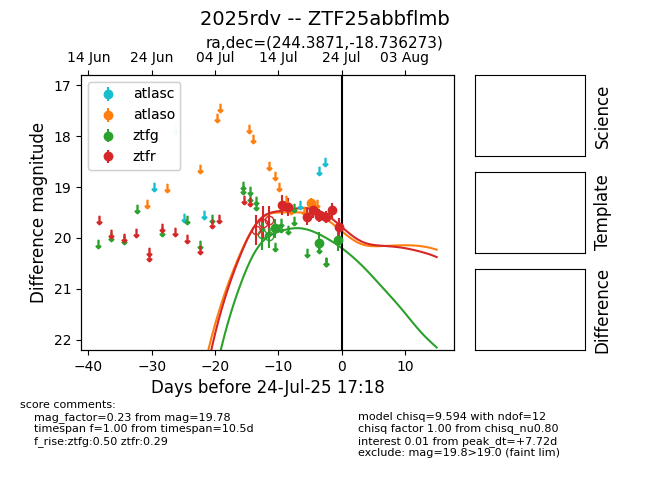

Target 2025rdv at 2025-07-24 17:18, see:
FINK: fink-portal.org/2025rdv
Lasair: lasair-ztf.lsst.ac.uk/objects/2025rdv
ALeRCE: alerce.online/object/2025rdv
TNS: wis-tns.org/object/2025rdv
YSE: ziggy.ucolick.org/yse/transient_detail/2025rdv
alt names
ZTF25abbflmb (ztf,fink)
2025rdv (tns,yse)
coordinates:
equatorial (ra, dec) = (244.3871,-18.73627)
galactic (l, b) = (356.1381,+22.20278)
photometry
last atlaso=19.31, ztfg=20.03, ztfr=19.78
1 atlaso, 3 ztfg, 8 ztfr detections
